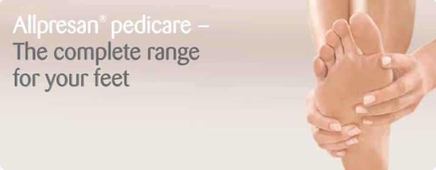

Basic Foot Care
Allpresan pedicare foot care foam for normal to dry skin
Recommended if:
Important ingredients:
Urea (5%) binds moisture in the skin.
Stearic acid protects and smoothes the skin.
Substances containing lipids combat dehydration.
Retail Size: 125 ml
Allpresan pedicare foot care foam for very dry skin
Recommended if:
Important ingredients:
Urea (10%) binds moisture in the skin.
Stearic acid protects and smoothes the skin.
Substances containing lipids combat dehydration.
Retail Size: 125 ml and 35 ml
Intensive Foot Care
Allpresan pedicare foot care foam for cracked skin
Recommended if:
Important ingredients:
Urea (15%) binds moisture in the skin.
Evening primrose oil improves the skin's structure.
Stearic acid protects and smoothes the skin.
Substances containing lipids combat dehydration.
Retail Size: 125 ml
Special Anti-Fungal Foot Care
Allpresan pedicare foot foam for very dry skin with anti-fungal protection
Recommended if:
Important ingredients:
Urea (10%) binds moisture in the skin.
Stearic acid protects and smoothes the skin.
Clotrimazole (1%) stops the growth of fungi that cause skin infections, including athlete's foot.
Retail Size: 125
Allpresan pedicare nail tincture for brittle and dry nails
Recommended if:
Important ingredients:
Panthenol improves structure of brittle and dry nails.
Clotrimazole (1%) stops the growth of fungi that cause skin infections, including athlete's foot.
Retail Size: 50 ml
Special and Complementary Foot Care for sweaty feet
Allpresan pedicare foot cream foam for
normal to dry skin
Recommended if:
Important ingredients:
Glycerin cares for the foot's skin.
Sage curbs excessive perspiration.
Oak bark contracts the skin's pores.
Retail Size: 125 ml
Complementary Foot Care for smelly and hot feet
Allpresan pedicare foot deodorant
Recommended if:
Important ingredients:
Tea tree oil combats odour-causing germs.
Menthol cools the skin with a fresh scent.
Retail Size: 75 ml
Complementary Foot Care for smelly shoes
Allpresan pedicare shoe deodorant
Recommended if:
Important ingredients:
Tea tree oil combats odour-causing germs.
Retail Size: 75 ml
Click here to go back to the Allpresan product page.